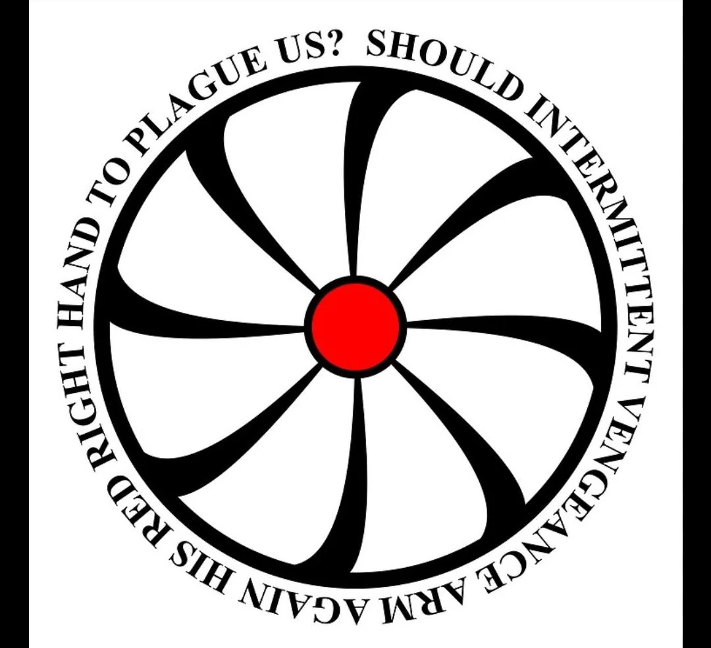

Повстанці Хаосу
Повстанці Хаосу — ворожа організація, яка колись була частиною Фонду SCP. Вони використовують аномальні об'єкти для досягнення своїх цілей, нехтуючи безпекою та моральністю. Їхня місія — підірвати вплив Фонду та отримати контроль над надприродним.
